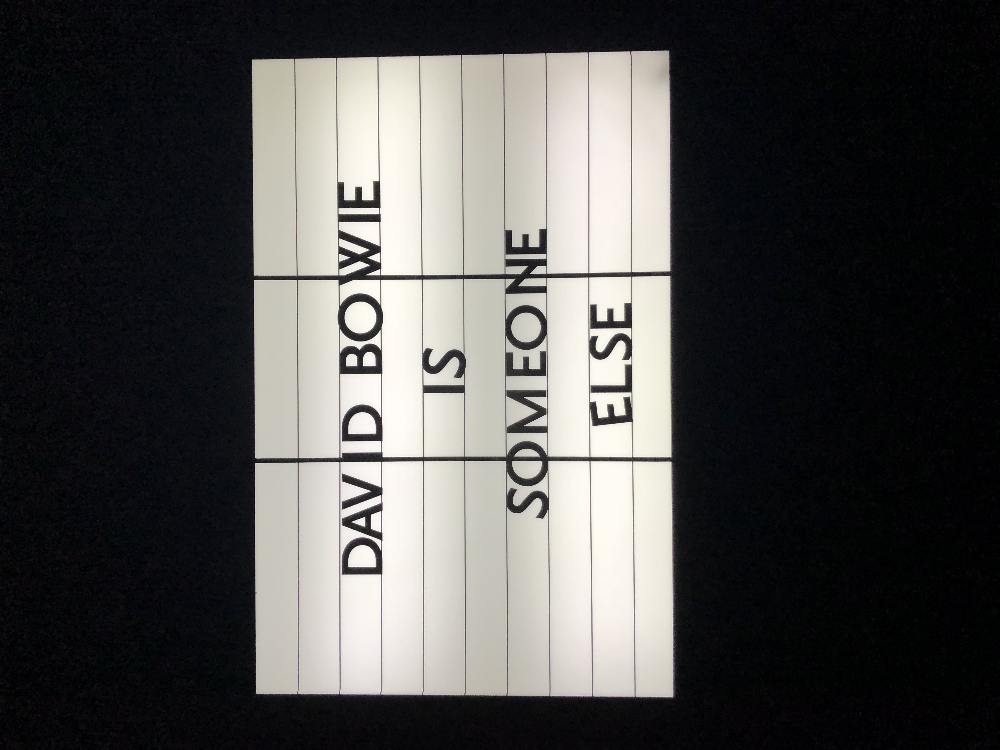

David Bowie Exhibit Details Exclusive Vinyl Releases, Rare Recordings
Silver vinyl seven-inch, live mini-LP will be available at expansive Brooklyn Museum exhibition
By Jon Blistein
Feburary 28, 2018
The limited edition releases include a seven-inch single of "Time," "The Prettiest Star" and Live in Berlin (1978), an eight-track mini-LP featuring four previously unreleased recordings. The Brooklyn Museum will also stock a red vinyl version of iSelect, a compilation Bowie curated that has been available at previous David Bowie Is stops.
The "Time" and "The Prettiest Star" single will be pressed on silver vinyl and features a rare picture sleeve. The Live in Berlin mini-LP will be pressed on orange vinyl and features recordings from Bowie's concert at Deutschland Halle May 16th, 1978. Along with the four unreleased cuts, the record boasts four more songs that have only been released in the past six months.
For the iSelect compilation, the Bowie-picked track list includes songs like "Lady Grinning Soul," "Teenage Wildlife," "Fantastic Voyage" and "Life on Mars?" While most of these tracks are the studio versions from the original records, iSelect does feature the a live rendition of "Intro/Hang On to Yourself" and a remix of "Time Will Crawl" that is exclusive to the compilation.
The David Bowie Is exhibit will close after its run at the Brooklyn Museum. The show has toured the world over the past five years with stops in London, Paris, Berlin, Amsterdam, Barcelona, Tokyo, Melbourne, Bologna and Chicago. The exhibit features Bowie's own artwork, artifacts and outfits from his massive archive, original lyric sheets and an array of musical instruments and gear.
"Time" and "The Prettiest Star" Track List
Side A
- 1 "Time"
Side B
- 1 "The Prettiest Star"
Live in Berlin Track List
Side One
- 1 "Heroes"
- 2 "Be My Wife"
- 3 "Blackout"
- 4 "Sense Of Doubt"
Side Two
- 1 "Breaking Glass"
- 2 "Fame"
- 3 "Alabama Song"
- 4 "Rebel Rebel"
iSelect Track
Side One
- 1 "Life On Mars?"
- 2 "Sweet Thing/Candidate/Sweet Thing (Reprise)"
- 3 "The Bewlay Brothers"
- 4 "Lady Grinning Soul"
- 5 "Win"
- 6 "Some Are"
Side Two
- 1 "Teenage Wildlife"
- 2 "Repetition"
- 3 "Fantastic voyage"
- 4 "Loving The Alien"
- 5 "Time Will Crawl" (MM Remix)
- 6 "Intro/Hang On To Yourself" (from Live Santa Monica '72)

Click to Enter Tribute Page
https://www.rollingstone.com/music/news/david-bowie-exhibit-details-exclusive-vinyl-releases-w517198